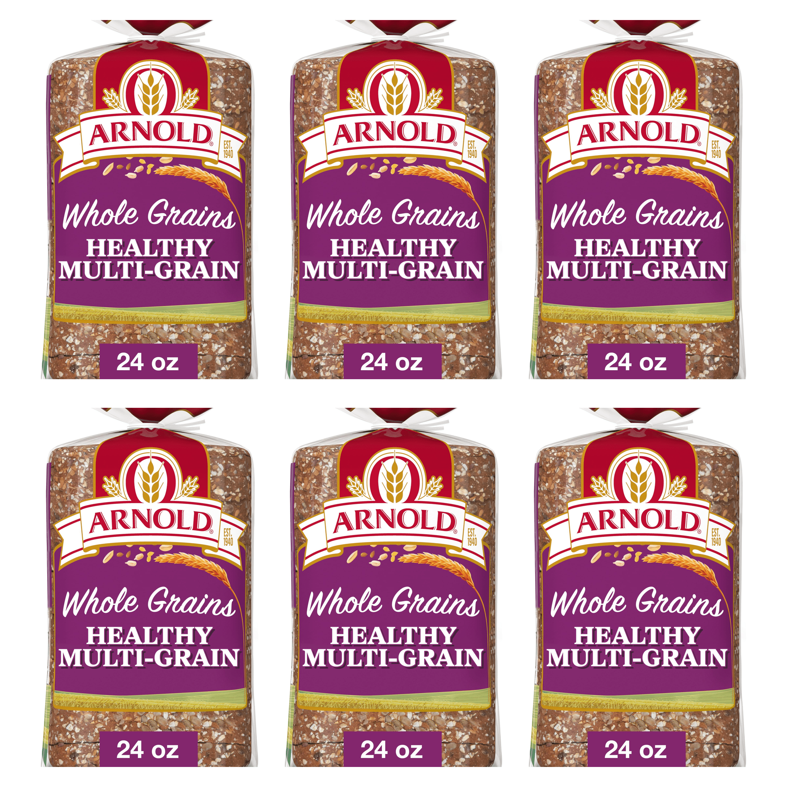
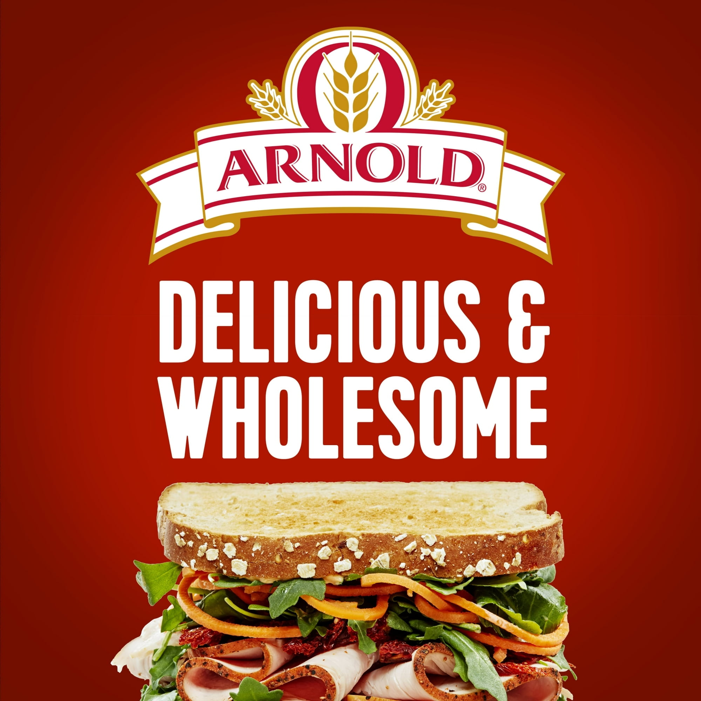
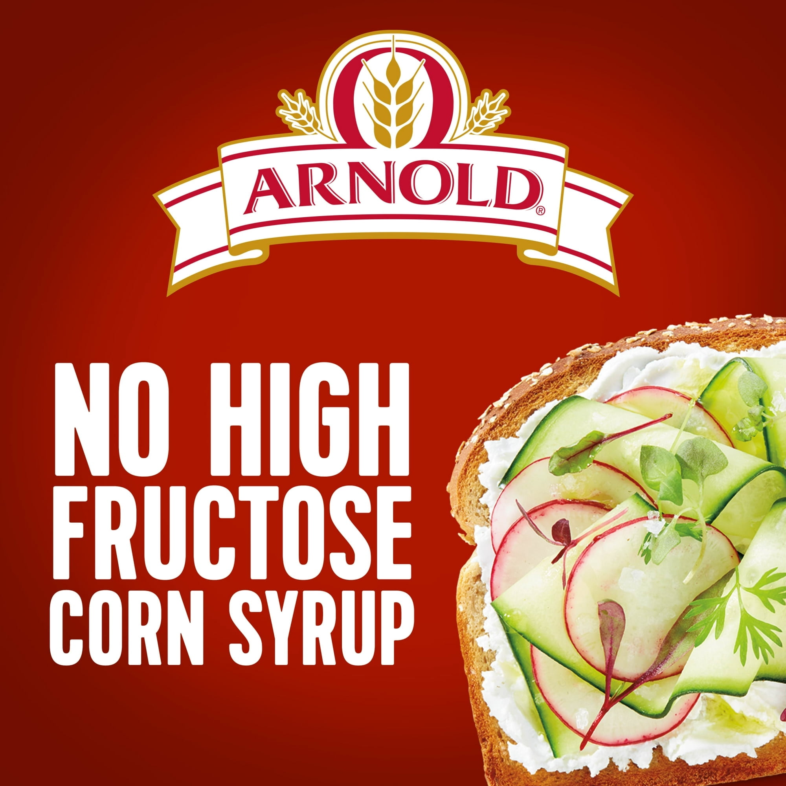

FaisalX-1228 · Pack of 6
Arnold Whole Grains Healthy Bread, 24 oz, Soft Multi-Grain Multigrain Bread, Bag (Pack of 6)
Item 8393619891 · captured 2026-07-29T05:30:32.726Z · PUBLISHED / ACTIVE
Изображения не меняются
Свежие MAIN и gallery побайтово совпадают с exact target.



Description
Arnold Whole Grains Healthy Multi Grain Bread is baked with the goodness of grains, making it a simple choice that supports your goal of living a balanced life. Filled with a delicious blend of diverse grains, this whole grain bread loaf gives your favorite sandwiches a rich, nutritional flavor. Free from artificial colors, flavors and preservatives, as well as high fructose corn syrup, this loaf of bread delivers nutrition in every bite and is heart healthy. Arnold Multi-Grain Bread provides a great foundation for savory egg salad sandwiches and other tasty meals whether you are at home, at work or need on the go snacks. This sandwich bread is also great for peanut butter and jelly or deli sandwiches as part of a school lunch. Enjoy a slice of Arnold Whole Grains Healthy Multi Grain Bread as your morning toast topped with butter and jelly or use it in other kitchen creations. Arnold Whole Grains Bread offers delicious nutrition for your balanced life from an expert name in bread. This item is Shelf Stable. Size Description: Regular.
Arnold Whole Grains Healthy Bread, 24 oz, Soft Multi-Grain Multigrain Bread, Bag (Pack of 6). This listing includes six 24 oz bags, for 144 oz total. Arnold Whole Grains Healthy Multi Grain Bread is baked with the goodness of grains, making it a simple choice that supports your goal of living a balanced life. Filled with a delicious blend of diverse grains, this whole grain bread loaf gives your favorite sandwiches a rich, nutritional flavor. Free from artificial colors, flavors and preservatives, as well as high fructose corn syrup, this loaf of bread delivers nutrition in every bite and is heart healthy. Arnold Multi-Grain Bread provides a great foundation for savory egg salad sandwiches and other tasty meals whether you are at home, at work or need on the go snacks. This sandwich bread is also great for peanut butter and jelly or deli sandwiches as part of a school lunch. Enjoy a slice of Arnold Whole Grains Healthy Multi Grain Bread as your morning toast topped with butter and jelly or use it in other kitchen creations. Arnold Whole Grains Bread offers delicious nutrition for your balanced life from an expert name in bread. This item is Shelf Stable. Size Description: Regular.
Bullet points
| До · live | Предлагаемое |
|---|---|
| Baked with a delicious blend of oats, sunflower seeds and flaxseed providing a rich, nutritious flavor | PACK OF 6: Includes 6 bags of Arnold Whole Grains Healthy Bread, Soft Multi-Grain Multigrain Bread; each bag is 24 oz, for 144 oz total |
| Arnold multi-grain bread is free from artificial colors, artificial flavors, artificial preservatives and high fructose corn syrup | Baked with a delicious blend of oats, sunflower seeds and flaxseed providing a rich, nutritious flavor |
| This hearty whole grain bread is great for chicken salad sandwiches, toasting and topping with butter, making a classic PB and J and more | Arnold multi-grain bread is free from artificial colors, artificial flavors, artificial preservatives and high fructose corn syrup |
Qualification precheck
Review SHA: 4e81c7cae683cdffaa4c977f0fa01dd769e2bae6b98a2a9ba29c337ef3d6e58f
Compilation body SHA: 503e974ba920cfe318966350b706c9625ce17b42cbbdba355ccffb00445f3e4e